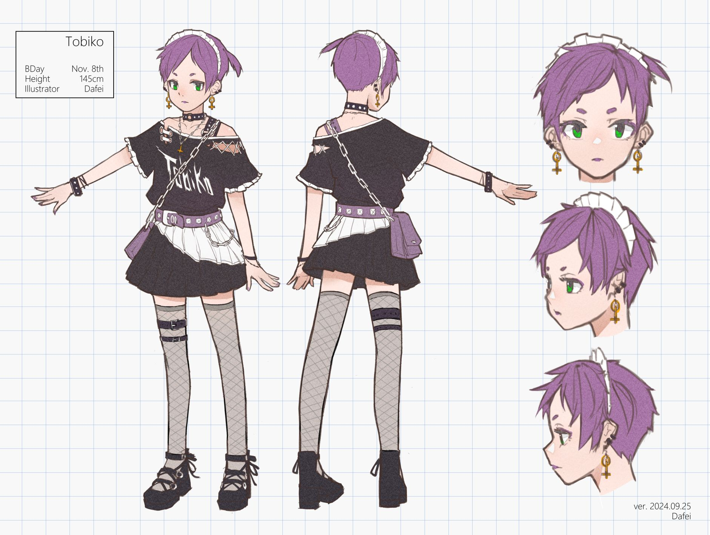

Design Sheet
Full character design reference sheet (2024)
Character Profile
Personality
Tobiko is a maid who resides within cyber space. She possesses a very distinct and somewhat contradictory personality. While she is exceptionally kind, polite, and helpful to strangers and the general public, she treats her creator, Dafei, quite differently. She is known to be sharp-tongued, impolite, and often "talks bad" to him—a unique quirk of their creator-creation relationship.
Art Styles & Costumes
Tobiko is not bound to a single appearance. As a digital entity, she often changes her style depending on the situation in cyber space.


Fan Art Guidelines
🎨 Create & Share!
I welcome and encourage fan art of Tobiko! It brings me great joy to see her interpreted in different styles.
If you draw Tobiko, please send it to me!
I would be incredibly happy to see your work.